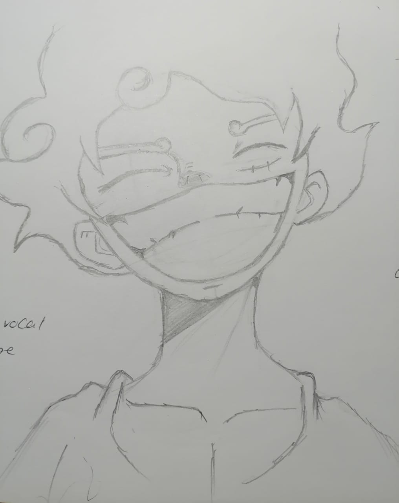
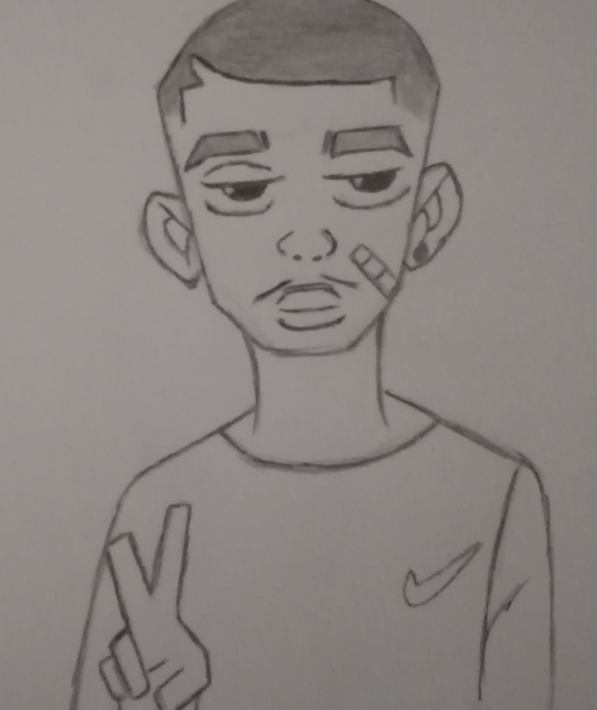

About Me
Welcome to my corner of the internet hehe!!
I happen to be a curious seeker with a passion for creativity and all whimsical things.I believe that life is best lived with a touch of satire and a sprinkle diggle of sarcasm.
Whether i'm diving into the latest anime series or sharing a joke to brighten someone's day, i find joy in the little things.
Skating through life with a carefree spirit, i like embracing the beauty of nature because i too am part of nature.
I like to practise mindfulness as it keeps me grounded and appreciate each moment.This approach to life fuels my creativity and enhances my experiences, making each day feel like a new adventure ya feel me, i also love everyone.
I am excited to share my journey with you, filled with poetry, laughter, and a dash of the eccentric.Let us explore this wild rice called "life" together!!-

Inspiration
I find Inspiration from random objects and people, including people's toes!! but here's a few of my Inspirations.
- My dearest mother is one of my inspirations and i love you mommy
- Friedrich Nietzsche's concept of the Ubermensch
- Kahlil Gibran's "The Prophet"
- Various religious and spiritual practises both mainstream and indigenous
- Anyone who embodies tenacity
- My classmates and brother Shawoooooooooooooooouuuuuuunnnn
- Napoleon Hill's "Think and Grow Rich"
- Me myself and I and music ofcourse , anime too
Favourite Quotes
"Your pain is the breaking of the shell that encloses your understanding.It is the bitter potion by which the physician within you heals your sick self.So trust the physician and drink his remedy in tranquility and silence"-Kahlil Gibran
"I become insane, with long intervals of horrible sanity."- Edgar Allan Poe
"Each of us lives dependent and bound by our individual knowledge and our awareness.All that is what we call reality but however both knowledge and awaress are equivocal.One's reality may be another's illusion we all live inside our own fantasies"- Itachi Uchiha
"And those that were seen dancing were thought to be insane by those who could not hear the music"- Friedrick Nietzsche
"Ni songo nyadza muthi vhutshiloni namusi ndi ini matshelo ndi Friday"-Vhavenda
"A person who sells eggs should not start a fight in the market"-Zambia
"UBUNTU-Umuntu ngu muntu nga bantu- a person is a person because of others"-Zulu proverb
Meditation and Spirituality
Meditation is a practise that allows lets to looking inwardly.It's a gentle journey into the self, where each moment spent in stillness reveals new layers of understandind and healing.
For me, Meditation has been a transformative experience, helping me connect with my inner self and accept myself for who i am without feeling shame.
Through meditation, I've learned to embrace my emotions and experiences fully.Each session brings a fresh perspective, allowing me to heal and grow.
It's space where i can explore my thoughts without judgement, allowing me to love myself.
Spirituality,for me is the thread that weaves through my life, connecting me to everything around me.
It's all about recognizing the divine in the ordinary, finding love and grace in every encounter.
This journey has deepened my appreciation for life and i am forever grateful.
I cherish the sense of unity "tawhid" that comes from embracing the all.The interconnectedness of every being and the love that flows through it.
I've found a profound love for God and this encourages me to celebrate each moment, fostering gratitude for both the challenges and the joys.
I urge you to meditate, not only has this practise helped me heal but it has also opened by heart to the beauty of existence.
Music & Anime
Music
Music and Anime are two art forms that pulse at the heart of my creativity.Each inspire me throughout my journey and i've learned to much from various characters.
- Smoke City - Flying Away: A soulful journey that feels like floating on a cloud.
- Vivaldi - The Four Seasons: A timeless classic that paints the changing seasons with exquisite melodies.
- Ahmad Jamal - The Awakening: A masterful blend of jazz that awakens the senses.
- Deltron 3030 - Deltron 3030: A futuristic hip-hop odyssey that challenges the mind.
- Funkadelic - Maggot Brain: A masterpice that takes you on a wild ride to eat rice.
- Jimi Hendrix Experince: His electrifying guitar work is nothing short of magic.
- Cultural spears -Khudu: The beauty of music from Botswana educating us on their culture.
- Nirvana -Nevermind and In Utero: Raw, honest, and powerful- these albums define a generation.
- A Tribe Called Quest - Low End Theory: A collection of abstract thought-provoking hip-hop.
I also enjoy the soulful sounds of artists like Jill Scott, Erykah Badu, and India Arie, as well as African legends like Fela Kuti, Brenda Fassie, Abdullah Ibrahim and Bra Hugh Masekela
Anime
When it comes to anime, my list is a treasure of profound storytelling. Here are some of my all-time favourite:
- Naruto:A journey of growth, friendship, and the pursuit of dreams.
- Hunter x Hunter: A captivating exploration of the human spirit and determination.
- Yu Yu Hakusho:Classic anime that balances action with deep emotional arcs.
- Gintama:A hilarious yet poignant take on life and society.
- FLCL: A surreal and artistic experience that defies convention.
- Neon Genesis Evangelion: A thought-provoking blend of mecha and psychological depth.
- Samurai Champloo: A fusion of hip-hop culture and historical storytelling.
- Mitchiko & Hatchin: This anime made me cry that's all i'll say especially the ending.
- Kuroko no Basket: A dive into the world of teamwork and basketball.
- Serial Experiments Lain: Mind-bending journey through technology and reality.
- Monster:A psychological thriller that keeps you on the edge of your seat.
- Parasyte: The Maxim: A thrilling horror and philosophical questioning.
- Ergo Proxy:A philosophical exploration of identity and existence.
These musical and anime treasures not only entertain but also inspire me to see the world through different lenses.I could go on forever, but this is just a glimpse into the sounds and stories that shape my life.
Food
Food is a celebration of culture and creativity.Here are some of my favourites:
- Jollof Rice: A flavourful west african dish.
- Sattvic Foods: Nourishing and wholesome, promoting purity and health.
- Ital Cuisine:Embracing indigenous African flavours, focusing on plant-based ingredients.
- Pap with Moroho: mealie meal dish made with moroho.
- Samp:Traditional dish made from coarsely ground corn, rich in flavour and texture.
Each dish tells a story, and i find joy in exploring flavors and experimenting in the kitchen!!.
Poetry
I love poetry and i write a lot here's some of my works
Weird maybe,anomaly eye, avant-garde , still weep like lain on a cold sunday night Fresh potatoes to make nimu , let loose and die trying I can see it and it looks bright like mr sun, “shine” i said to him, he gave me ideas and Led me to my mother, eccentric as ever I found a smile in my mothers garden To stand firm in my truth i went deep into the nile , the great nile speaks of the days of “Love” and “unity” i saw his great misery , in a split second i died and it made me demented, Must have been a dream Ugochukwu.!!
Fool: Lies carried on my lips like the wind, They swirl around, I welcomed them at a tender age, A way to cope with loss unaware of the weight i bore. Why did i ever lie? It became a soothing habit, comforting as melodies. My heart an open canvas, waiting for a painter's touch, He appears when i need him not, Yet i need him dearly. Stranger you've illuminated my deep-rooted struggle with Falsehood, I resent your arrival, knowing you'll soon depart, But your presence has been vital for my healing journey.- Melody
Who: What is this world? Who am i? what is my purpose? Questions linger Yet it's okay. There's so much to see, And so much unseen. I yearn to visit the ocean to meditate, find my peace. My inner calm comes first, yet love knocks softly, while i'm still in the shadows. why was i chosen to be here? Awakened suddenly,The world seems different. What have I done? I love this yet feel distant. perhaps I still need to heal from wounds I cannot name. My sanity, my insanity, A delicate dance on this vague path. But I believe. Everything will be okay with each wave that crashes, I'll find my way. - Melody
Love : THIS LOVE HATH ME TREMBLING; I HEARD A VOICE WHILST PRACTISING MINDFULNESS, BIDDING ME TO ACCEPT AND CHERISH THIS AFFECTION. YET FEAR HATH CAST A TONE-DEAF VEIL UPON ME, LIKE A RIVER, I YEARN TO FLOW, BUT IT SEEMETH NOT EASY. TO FIND ONE'S FOOTING IN A CONFINED SPACE IS AKIN TO SCATTERED PAPERS UPON A FOUNTAIN .O LOVE ME, STRANGER-SHOULDST THOU? OR AM I MERELY MENDING FROM MY PAST WOUNDS? -Melody